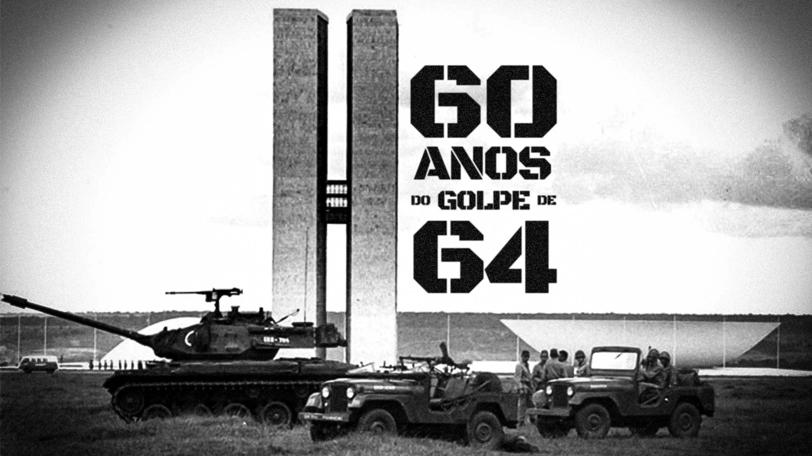

Com o apoio da burguesia, da classe média e dos EUA, o Golpe Militar de 1964 foi a deposição o presidente João Goulart e o começo da Ditadura Militar. Com o exílio de João Goulart pelo medo de uma possível guerra civil, ele se exilou no Uruguai, onde morreu em 1976.
Em seu lugar, assumiu provisoriamente o presidente Ranieri Mazzilli, que assumiu a presidência por apenas 13 dias. Porém, ele não teve nenhum poder político, devido aos militares não permitirem.
